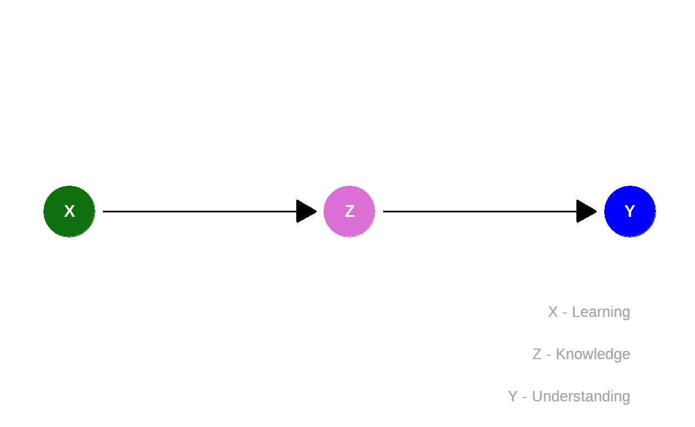

Lernziele
In diesem Modul lernen Sie:
was eine kausale Kette ist;
was ein Mediator ist;
dass es manchmal besser ist, bestimmte Variablen in der Analyse nicht zu berücksichtigen.
Eins führt zum anderen
Auch komplexe kausale Diagramme bestehen aus relativ einfachen Grundelementen. Eines davon ist die sog. Kette (engl.: chain).
Zur Erinnerung: Der kausale Fluss folgt den Pfeilen. \[A \rightarrow B\] sagt aus, dass \(B\) auf \(A\) hört. Im Modul zwei: Wenn es regenet, (\(A\)), wird die Straße nass (\(B\)).
Bei einer Kette kommt einfach eine dritte Variable dazu: \[A \rightarrow B \rightarrow C.\] Zum Beispiel: wenn es regenet, (\(A\)) wird die Straße nass (\(B\)) und es wird rutschig (\(C\)).
Lernen und Verstehen
Das folgende Beispiel ist fiktiv – und eine sehr starke Vereinfachung. Außerdem wird die wichtige Frage, wie die Variablen jeweils gemessen werden, nicht behandelt.
Anmerkung: Siehe hierzu z. B. “Welche Information steckt in Daten?” aus dem KI-Campus Kurs Stadt | Land | DatenFluss.
Angenommen,
Wenn dieses stark vereinfachte Modell stimmt, dann lässt sich diese Annahme in einem kausalen Diagramm darstellen:

Das strukturelle kausale Modell besteht aus folgenden Zuweisungen:
\[\begin{eqnarray*} \color{green}{X} &=& U_{\color{green}{X}}\\ \color{violet}{Z} &=& f_{\color{violet}{Z}}(\color{green}{X}, U_{\color{violet}{Z}})\\ \color{blue}{Y} &=& f_{\color{blue}{Y}}(\color{violet}{Z},U_{\color{blue}{Y}}). \end{eqnarray*}\]
Der Wert von
Mediator
In Fällen wie diesen: \[\color{green}{X} \rightarrow \color{violet}{Z} \rightarrow \color{blue}{Y}\] wird die Variable in der Mitte – hier \(\color{violet}{Z}\) – Mediator genannt.
Um den kausalen Effekt der Ursache (\(\color{green}{X}\)) auf die Wirkung (\(\color{blue}{Y}\)) zu untersuchen, müssen
wir den Wert des Mediators (\(\color{violet}{Z}\)) nicht kennen. Wenn wir
also zum Beispiel wissen wollen, wie sich das
Tatsächlich kann sogar die Berücksichtigung des Mediators dazu führen, dass der kausale Effekt verzerrt wird. Das werden wir im Folgenden mithilfe einer Simulation genauer betrachten.
Anmerkung: Im Kontext von Mediation wird zwischen totalen, direkten und indirekten Effekte unterscheiden. Im Beispiel interessiert uns der gesamte Effekt von Geschlecht, der totale Effekt.
Würde uns stattdessen interessieren, inwiefern Geschlecht unabhängig von Beförderung einen Effekt auf das Gehalt hat, so wäre das Analyseziel der direkte Effekt. Und wenn uns interessieren würde, inwiefern die Effekte des Geschlechts über Beförderungen vermittelt würden, so wäre das Analyseziel der indirekte Effekt.
Simulierte Daten
Zurück zum Zusammenhang von Lernen, Wissen und Verstehen. In
R sind Simulationen für das Modell
\[\begin{eqnarray*} \color{green}{X} &=& U_{\color{green}{X}}\\ \color{violet}{Z} &=& f_{\color{violet}{Z}}(\color{green}{X}, U_{\color{violet}{Z}})\\ \color{blue}{Y} &=& f_{\color{blue}{Y}}(\color{violet}{Z},U_{\color{blue}{Y}}). \end{eqnarray*}\]
hinterlegt.
Zur Erinnerung (siehe auch Modul 2), \(U\) bezeichnet jeweils unbekannte Ursachen; \(f\) die Funktionen, anhand derer den Variablen Werte zugewiesen werden.
Simulieren Sie Beobachtungen in dem Sie mehrfach auf
Ausführen klicken und versuchen Sie zu erkennen, wie die
Variablen miteinander zusammenhängen:
x <- U_X()
cat("Wert x (Lernen):", x, "\n")
z <- f_Z(x)
cat("Wert z (Wissen):", z, "\n")
y <- f_Y(z)
cat("Wert y (Verstehen):", y, "\n")Intervention
Statt nur zu beobachten (\(\color{green}{X} = U_{\color{green}{X}}\)) können wir auch eine Intervention simulieren, in der wir Werte festlegen (\(do(\color{green}{X}=x)\)).
Im Code-Beispiel ist \(do(\color{green}{X}=1)\). Drücken Sie
zunächst ein paar Mal auf Ausführen um zu gucken, wie die
Werte von Verstehen (\(\color{blue}{Y}\)) im Falls von \(do(\color{green}{X}=1)\) aussehen. Ändern
Sie anschließend den Code so, dass Sie \(do(\color{green}{X}=10)\) simulieren
können. Was passiert?
# Hier der Befehl fuer do(X=1)
x <- 1
cat("Wert x (Lernen):", x, "\n")
z <- f_Z(x)
cat("Wert z (Wissen):", z, "\n")
y <- f_Y(z)
cat("Wert y (Verstehen):", y, "\n") # do(X=10)
x <- 10
cat("Wert x (Lernen):", x, "\n")
z <- f_Z(x)
cat("Wert z (Wissen):", z, "\n")
y <- f_Y(z)
cat("Wert y (Verstehen):", y, "\n")Für die Erläuterung bitte auf Weiter klicken.
Während die Werte für \(\color{blue}{Y}\) bei \(do(\color{green}{X}=1)\) um die \(\color{blue}{15}\) schwanken, liegen sie bei \(do(\color{green}{X}=10)\) um die \(\color{blue}{150}\). Wir sehen also, dass eine Veränderung von \(\color{green}{X}\) tatsächlich zu einer Veränderung von \(\color{blue}{Y}\) führt. Dieser kausale Zusammenhang wird durch \(\color{violet}{Wissen}\) vermittelt: Mehr Lernen führt zu mehr Wissen führt zu mehr Verstehen.
Probieren Sie dies durch Klick auf Ausführen ruhig
aus:
x <- U_X()
cat("Wert x (Lernen):", x, "\n")
z <- 15
cat("Wert z (Wissen):", z, "\n")
y <- f_Y(z)
cat("Wert y (Verstehen):", y, "\n")Der bekannte Wert von z wird in Zeile 3 unabhängig vom
Wert von x auf \(15\)
gesetzt. Jetzt schwanken x und y zwar noch
zufällig, sind aber unabhängig voneinander.
Kausales Modell
Die zugrunde liegenden Gleichungen des soeben simulierten kausalen Modells lauten:
\[\begin{eqnarray*} \color{green}{X} &=& U_{\color{green}{X}}, \quad U_{\color{green}{X}} \sim \mathcal{G}(1,\,10), \\ \color{violet}{Z} &=& 5 \cdot \color{green}{X} + U_{\color{violet}{Z}}, \quad U_{\color{violet}{Z}} \sim \mathcal{N}(0,\,1), \\ \color{blue}{Y} &=& 3 \cdot \color{violet}{Z} + U_{\color{blue}{Y}}, \quad U_{\color{blue}{Y}} \sim \mathcal{N}(0,\,1). \end{eqnarray*}\]
Dabei steht \(\mathcal{G}(1,\,10)\) für eine Gleichverteilung auf den Bereich von \(1\) bis \(10\) und \(\mathcal{N}(0,\,1)\) für eine Normalverteilung mit den Parametern \(\mu=0\) und \(\sigma=1\), also eine Standardnormalverteilung. Die konkreten Funktionen und Parameter sind hier willkürlich gewählt.
Einsetzen von \(f_{\color{violet}{Z}}\) in \(f_{\color{blue}{Y}}\) ergibt \(\color{blue}{Y} = 3 \cdot (5 \cdot \color{green}{X} + U_{\color{violet}{Z}}) + U_{\color{blue}{Y}}=15 \cdot \color{green}{X} + 5 \cdot U_{\color{violet}{Z}} + U_{\color{blue}{Y}}.\)
Für \(n=100\) simulierten
Beobachtungen lautet der dazugehörige R-Code:
## Vorbereitungen
library(mosaic) # Paket laden
set.seed(1896) # Zufallszahlengenerator setzen (für Reproduzierbarkeit)
## Funktionen
U_X <- function(n = 1) runif(n, min = 1, max = 10)
f_Z <- function(x) 5 * x + rnorm(length(x))
f_Y <- function(z) 3 * z + rnorm(length(z))
## Datentabelle
n <- 100 # Anzahl Beobachtungen
SimData <- tibble(x = U_X(n)) %>%
mutate(z = f_Z(x)) %>%
mutate(y = f_Y(z)Lineare Regression, Versuch 1
Natürlich wissen Sie in den meisten Anwendungsfällen nicht, welches System an Gleichungen Ihren Daten zugrundeliegen. Stattdessen sammeln Sie Daten und untersuchen dann die Zusammenhänge, um Rückschlüsse über das zugrundeliegende System zu schließen. Ein Verfahren, um Zusammenhänge zwischen Variablen \(\color{green}{X}\) und \(\color{blue}{Y}\) anhand von beobachteten Daten zu schätzen, ist die Lineare Regression.
Anmerkung: Siehe hierzu z. B. “Maschinelles Lernen” aus dem KI-Campus Kurs The Elements of AI.
Dabei wird angenommen, dass der Zusammenhang zwischen der zu erklärenden Variable \(\color{blue}{Y}\) und den weiteren Variablen im Modell linear ist, d. h., es reicht nur die jeweiligen Steigungen zu schätzen, um den Zusammenhang zu beschreiben. So sieht es aus, wenn wir in unseren simulierten Daten den Zusammenhang zwischen Lernen und Verstehen berechnen:

In R kann eine lineare Regression über die Funktion
lm() berechnet werden.
Ohne den Mediator
# Regression Rechnen
ModellA <- lm(y ~ x, data = SimData)
# Ergebnis
ModellA##
## Call:
## lm(formula = y ~ x, data = SimData)
##
## Coefficients:
## (Intercept) x
## 0.5414 14.8623D. h.:
\[\widehat{\color{blue}{\text{Verstehen}}} = 0.54 + 14.86 \times \color{green}{\text{Lernen}}\]
Gemäß dieses Modells liegt der (totale) kausale Effekt von
Das deckt sich mir den Ergebnissen unserer simulierten Intervention: Während die Werte für \(\color{blue}{Y}\) bei \(do(\color{green}{X}=1)\) um die \(\color{blue}{15}\) schwankten, lagen sie bei \(do(\color{green}{X}=10)\) um die \(\color{blue}{150}\). Die Ergebnisse der linearen Regression entsprechen tatsächlich dem kausalen Effekt von Interesse.
Anmerkung: Der Fokus dieses Kurses liegt auf der
Identifizierung von kausalen Effekten, nicht auf Schätzverfahren oder
statistischer Inferenz. Wenn Sie damit vertraut sind, können Sie über
summary() auch die übliche Regressionstabelle
inkl. Standardfehler, p-Werten usw. erhalten:
# Regression Rechnen
ModellA <- lm(y ~ x, data = SimData)
# Ergebnis
summary(ModellA)Lineare Regression, Versuch 2
Aber was passiert, wenn der Mediator
# Regression Rechnen
ModellB <- lm(y ~ x + z, data = SimData)
# Ergebnis
ModellB##
## Call:
## lm(formula = y ~ x + z, data = SimData)
##
## Coefficients:
## (Intercept) x z
## 0.4260 0.8636 2.8032D. h.:
\[\widehat{\color{blue}{\text{Verstehen}}}
= 0.43 + 0.86 \times \color{green}{\text{Lernen}} + 2.8 \times
\color{violet}{\text{Wissen}}\] Wenn
Anmerkung: Die geschätzten Werte in der Regression entprechen aufgrund von zufälligen Rauschen nicht den wahren Werten die wir für die Simulation verwendet haben.
Zusammenfassung
Um den (totalen) kausalen Effekt von \(X\) auf \(Y\) in einer Kette \[X \rightarrow Z \rightarrow Y\] zu bestimmen, sollte ein Mediator \(Z\) nicht berücksichtigt werden. Bei fixiertem \(Z\) (z.B., wenn die Variable in einer Regression aufgenommen wird) wird der kausale Zusammenhang zwischen \(X\) und \(Y\) unterbrochen.
Hinweis
Bitte melden Sie Fehler, Unklarheiten und Verbesserungsvorschläge hier.
Das Vorhaben Was, wie, warum? Einstiegskurs Kausale Inferenz (WWWEKI) wird mit Mitteln des Bundesministeriums für Bildung und Forschung unter dem Förderkennzeichen 16DHBQP040 gefördert.